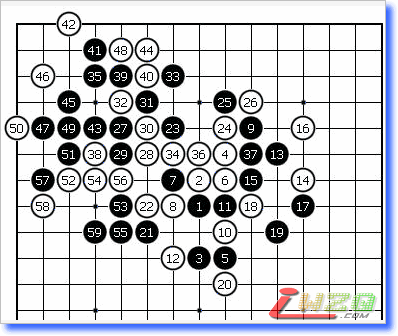
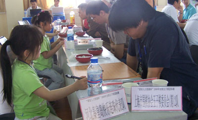
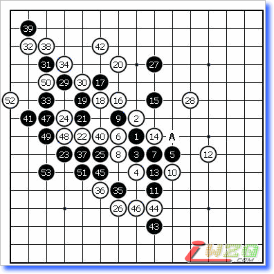
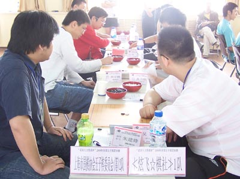
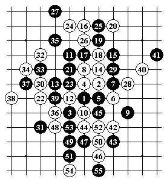
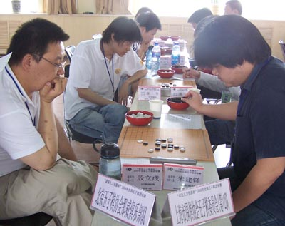
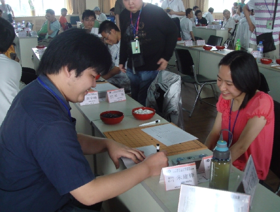

【有志注：原文发表于李洪斌老师的百度空间中（点击进入），本文正在更新中，如欲发表个人看法请到『 五子棋交流』板块，谢谢！】
早上到家睡到现在才算清醒了些，随手写点关于全团赛的东西。
这次上海队基本上完成了赛前的目标，只是运气稍欠而已。希望年轻棋手摆正心态，毕竟以后的机会多的是。本次比赛江苏一队让人刮目相看，假以时日相信一定会有更佳的表现。稍感遗憾的是那俱队发挥欠佳。
如果不是罗兄5月初的邀请，我没考虑过参赛。毕竟将近两年没碰棋盘棋子了，很难在短时间内适应比赛。因此，也只能为二队做些辅助工作，虽然是替补的身份，但并无上场的打算。由于5.12汶川地震，我们这也有较强震感，近半个月的时间很难静下心来做赛前准备。月底，老戈来找我练练棋，尽量恢复下状态。碰巧当天下午和我一起经历了次强余震，下图至59时余震发生对局中断。6月5日我们一起踏上赴石家庄的列车。

6日上午下车时候还下着小雨天气阴冷。由于是第一次来石家庄，之前在地图上看了看，从火车站到比赛地点约11公里左右。我们的驻地璐源大酒店环境和设施都很好，这要感谢罗兄的安排。
下午，终于见到上海这些老朋友，虽然两年没见，大家还都是老样子。晚上得知第二天第一轮的对手是秦皇岛快乐连珠，都是刚学棋不久的小朋友。虽然这一分已稳拿，但起不到热身效果。
7日上午第一轮，面对含着棒棒糖的对手，我们的队员丝毫不敢大意表情严肃。反而是快乐连珠的小队员，谈笑间根本没把我们当回事。

下午第二轮的对手是炫飞二队，这支队伍的前三台实力都很强，不过四台较弱。因此，赛前我们的策略是拿下四台，其他三台保平争胜。但棋局的进程却非赛前预料的那样。四台的薛文曦没几手棋就胜了，三台老戈开了个较冒险的银月，对手走的黑5赛前准备不充分，局面不乐观。二台黄宇峰局势较稳。一台朱建锋疏星执黑局面有些被动。此后，老戈负，黄宇峰胜，朱建锋和。第二轮险胜。
因必须在每轮结束前5分钟决定下轮上场名单，所以我们刚结束比赛，罗兄找我商量下轮上场名单，让我顶老戈，让他调整调整。我担心我目前的状态拖全队的后腿，有点犹豫不决。最终罗兄拍板，只要我上输赢不论。第三轮对阵结果是上海一队对上海二队同室操戈，我坐四台对手是张轶峰。张轶峰和我在正式比赛中相遇过一次，但好像是两年前的事了，当时差不多下了满盘才幸运的找到一个机会。第三轮我开斜月，做好苦战的准备，没想到张轶峰选择的变化我数年前研究过，如果选择其他变化我应该凶多吉少。本轮上海一、二两队2：2战和，下一轮我们的对手是由世界冠军领衔，夺冠呼声很高的炫飞一队。
第四轮我们的对手是炫飞一队，一台朱建锋VS吴镝应该是五五开，二台黄宇峰VS黄立勤，由于对方似乎不在状态，我们应该占优。三台薛文曦VS李非，薛稳健对应不太可能失分。我这第四台在上海2队应该算是最弱的一台，而对方四台贺启发，他前三轮保持全胜。我对他了解甚少，约两三年前在道场下过两盘，一盘疏星一盘瑞星。感觉他对疏、瑞星较熟。所以，晚上看了看疏星，早上起来看了看瑞星。没想到，他给我开了个松月，这轮比赛对手是有备而来。一三台选择瑞星同一变化，二四台也准备了松月的一个强防。

本局至20我与黄宇峰下的一样，区别在于他选择的5是A点高一路，21后我们彼此变招，按照各自的想法走。过程中，炫飞三台向裁判提出要求换台，理由是因为他们下的和一台变化一样，薛也没想别的就换了。其实大可不必，没有棋手会在对方准备的局面中一直选择一样的下法，如果那样结果是非常危险的。本图的白16最强防之一，多年前研究过，但没具体的结论。只记得黑棋有很强的一路进攻，可惜白有唯一防，如果实战选择那样下，一旦白棋走正确黑棋崩溃。因此，不能冒这样的风险。17也有另一种控制局面的下法，但比较容易想到。如果对手赛前准备的充分，容易对此有所提防。想来想去，还是尽快进入未知局面好些。17~26是我临场的预想，实战也是这样进行的。27是预定计划，这步棋似乎不在对手意料之中，贺启发长考。在他长考的时候，我也没闲着，限时比赛在占优情况下要不断的保持局面的压力，白28防的很好。我29下的很快，这步棋局部先手，白棋只能防守。在他考虑30的防守时，我已经算好接下来不管局部如何交换，我要走到35的要点。实战至36时白方所剩时间约20几分钟，我还有40多分钟，在时间上占优。37显而易见的要点，黑棋全局依然保持活力。38、40在时限压力下的败招，白下了40后我感觉黑有胜机，算了算发现简单胜了，即便如此还是验算了两遍。 最终，本轮我和黄宇峰胜，薛文曦、朱建锋战和，我们战胜了炫飞一队，下一轮的对手是老牌劲旅那威俱乐部队。 这次赛事组织者工作做的总体不错。美中不足的是比赛的第二、三天刷油漆，整座大楼弥漫一股刺鼻的油漆味，对比赛选手有一定的影响。
由于那俱队上午负于上海一队，因此，我们预料本轮他们必然要全力争胜。赛前的安排，由二台黄宇峰和三台薛文曦分别顶住曹冬和仇云飞，朱建峰和我见机行事。那俱队是支有丰富比赛经验的强队，该队新老结合阵容完整。并且赛风很好。与他们对弈可以投入地体验棋盘上的乐趣。
比赛开始，二台和三台布局很快，看到仇云飞布局山月我感觉薛文曦这盘很难输掉了。黄宇峰那盘瑞星，他一直发挥稳定，对他很放心。一台的殷立城迟迟没有布局，我等了差不多10分钟，老殷只在棋盘上下了一颗子，难不成他也在等我开局？看着再这么耗下去没有必要了，所以我开了斜月。在这段时间里，我的对手李一一直是危襟正坐目不斜视，难得在年轻棋手中看到如此老成的赛风。

对手交换自然，黑5给出三打稍感意外，因之前我和张轶峰那盘也是走的三打。本局，黑13最强！白14、16也是最强对应，此处变化复杂难解，不过我对此变例还是比较熟悉的，走到这里感觉这盘白棋可以满意。实战白30我用了些时间思考30-52的变化，但发现白那样并不好，局面容易失衡。黑31李一计算的时间并不长，白32是没有直接追胜手段的。虽然始终感觉这里有棋，但没想深算下去，因为一台朱建峰速胜了殷立城，我边上的薛文曦也处于优势，这时如果在这个局部花费大量时间算杀，还不如稳妥的找到和棋之路。局后检讨，36下37就白胜了。实战36以下是和棋下法，黑55李一提和彼此战罢。
本轮另外两局，薛文曦胜了仇云飞，黄宇峰和了曹冬。下一轮的对手是本届比赛的黑马江苏队，由于连续几天没休息好，加上对油漆味有些过敏。由养精蓄锐已久的老戈重新出阵。

由于江苏一队之前的表现，我们不敢大意。朱建峰开赛以来一直没有解决好开局问题，所以只能靠他临场发挥。后三台我们稍占优势，在稳守的前提下尽量争胜。开赛后，情况一度非常不明朗。朱建峰VS王烨林一局的疏星黑棋局势不好，对手下的很稳健。后三台处于胶着状态。随着时间的流逝，一台的形式越来越不利，不由得对本轮的结果担心起来。如果，江苏队及时调整战术，其他三台全力守和。那么我们的处境就更危险了。
赛程后半段，形势逐渐转好。戈宇、薛文曦和黄宇峰都经过苦战获胜。朱建峰由于不知道其他三台的结果，因此一直在苦苦支撑，虽然最后有防住的机会，但最终还是负于王烨林。江苏棋手以后如果能多积累些比赛经验，一定会取得更好的成绩。这让我想起以前镇江的棋手，可惜他们现在已经远离赛场了。

第七轮主要是心态问题导致发挥失常，这也是成长过程中的宝贵经验。比赛本身对棋手的锻炼是全方位的，相信通过这次大赛，各位一定能看到不足此处。这比单纯的名次之争有意义的多。
上海一队、三队表现也很好。客观的说，上海棋手现在的整体实力较以前有了明显的进步，尤其是同一水平的棋手较多，如果算上因故未来的，再组一只队也没问题。这次顾炜、葛凌峰除了要比赛，还要负责赛队的管理和教练工作，能打满7轮实属不易。罗锦伟、黄民城、周彪和李杰也为全队能安心比赛做了很多工作，这里表示感谢！
至于我个人，水平是退步了但似乎重新找到点比赛的乐趣。有机会的话会考虑多参加些赛事。
引用：这次上海队基本上完成了赛前的目标，只是运气稍欠而已。
这次上海1队2队和浙江都碰过了，各强队之间也全部互相碰过。最后上海两个队无论是大分、小分、胜台数、中间分、相互战绩，全部不如浙江队。而且输的两轮比赛，从棋谱上来看上海完全没有获胜的机会，可算是完败（这点在李洪斌的文章中避重就轻了，最关键的决赛过程一句话带过，呵呵）。所以我很想听李洪斌解释一下“运气稍欠”是什么意思
古龙早已不在
飞刀又现江湖
车来车往
英才辈出
归隐……